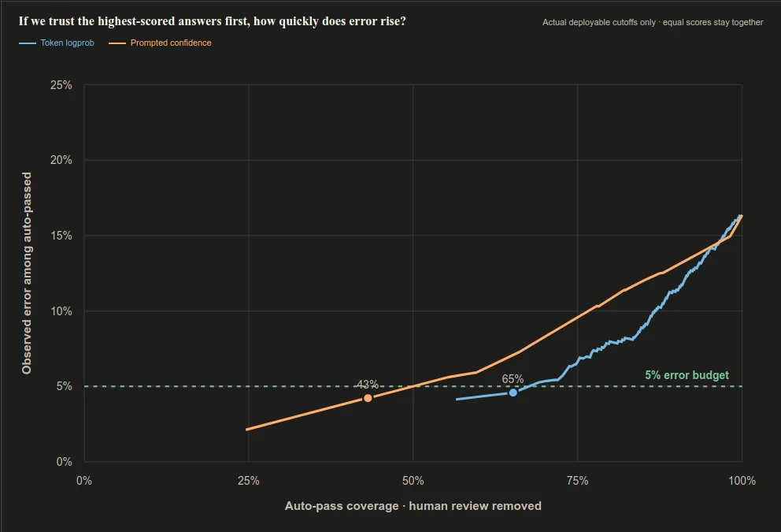
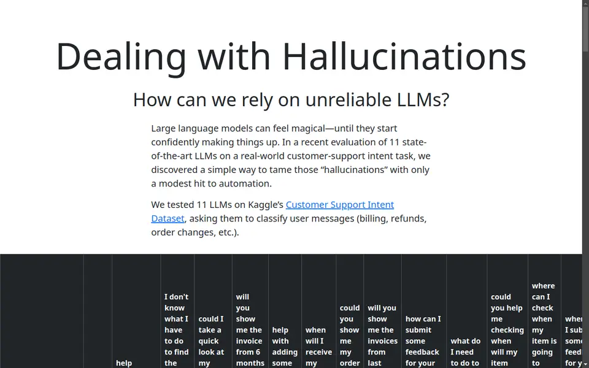
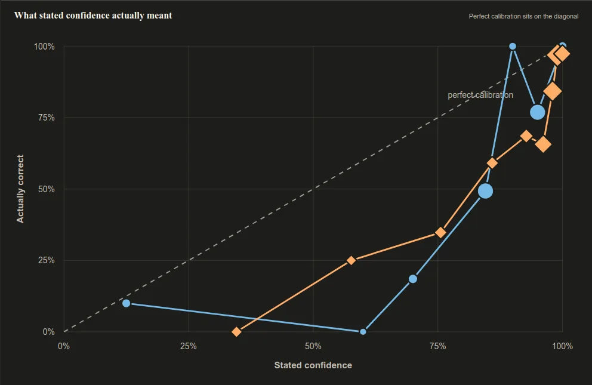
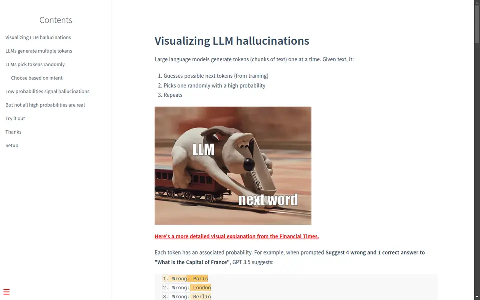
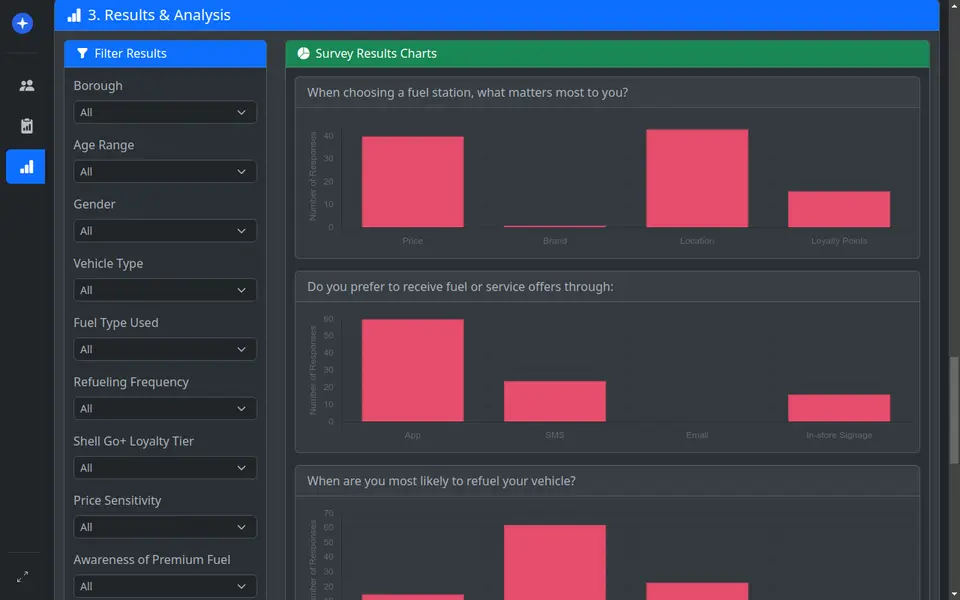
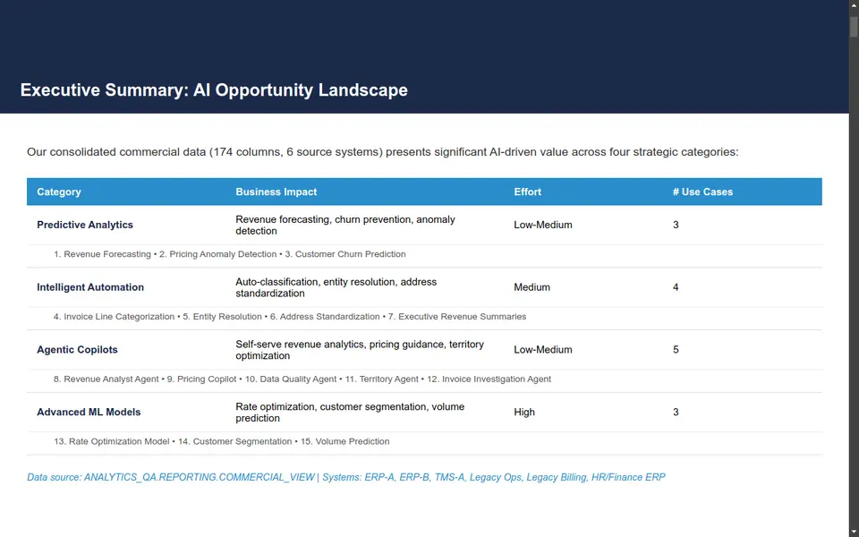

Prologue · Software you wrote
01:14to 07:44
How much of your software did you write?
The host introduced the talk with its title question, “When AI writes the code, who checks the AI?”, and guessed what his students would say: “AI will check the AI, right?” 00:00 Anand didn’t answer it. He started with a different one: “what percentage of the software that you use is coded by you?” 01:29
Then he counted hands, narrowing the question each time, and the room thinned out fast.
Anand’s own answer is a music player. VLC has no composer column to sort or filter by, which matters if you listen by composer. He asked ChatGPT for a player that did this. ChatGPT’s answer, in his retelling: VLC is open source, “You are a programmer. I can fix programs like crazy. What are you talking about? Just take it, download it, and fix it.” 04:19 So it did: here is his VLC fork with a composer column. He proudly showed it to his daughter.
“She looked at me like I was so dumb. ‘Why didn’t you have it write the entire music player?’”
Anand, on his daughter’s review of his VLC fork · 05:02
Now he has his own player, synced between phone and laptop, with a right-click “Find me 10 similar next songs”, which works as a personal recommendation engine. The day before the talk he was “hacking Gmail”: an extension where Alt+Shift+M attaches a note to an email, like “ignore for now”, so he doesn’t have to re-read and re-decide the same email every time. 06:35 The software doesn’t even have to be open source. Software is malleable.
He admitted this had “very little to do with the talk”, but it was a check on whether the room was dogfooding agentic coding at all. Then he named the real subject: “what I am going to talk about is how one goes about verifying AI agents.” 07:19 Hold on to the first question, though. It comes back at the end.
Act I · The test that failed
07:44to 11:50
Why is he eating an apple?
Straive recruits analysts using an online testing platform, iMocha, with a question bank for every skill. Anand took the data-analyst test himself. His score: 52 out of 59. He asked the room whether Straive would have hired him. A few said yes; “half a hand” said no. 09:01
The detail was even better. A SQL coding question that takes the average candidate 8 minutes 40 seconds took him 34 seconds. A data question that takes others 36 seconds took him about 6. And the proctoring report, which photographs the candidate through the webcam to check that nobody is helping, showed zero violations. 09:47
“Kind of looks fine, right? Except, how come I’m eating an apple in the middle of a test?” 10:11
The agent was Codex, driving the browser, running a deliberately cheap model, “GPT-5.6 Luna medium. … I’m not spending tokens on something as basic as this, which is incidentally why it got some of the spatial questions wrong.” 11:04 The video he played was real time.
Watch it happen
Codex sitting the practice test, in real time
Codex GPT 5 6 Luna solving an iMocha Practice Test on YouTube. The test runs on iMocha’s test platform; the agent controls the browser over the Chrome DevTools Protocol.
“If an agent is not taking your test, then you are wasting your time. If an agent is able to solve your test, you have to ask your professor, ‘What on Earth are you teaching me when my agent can do it?’”
Anand · 10:43
11:50to 14:27
The answer key was wrong
Anand sent the run to the team that maintains the questions, with two questions. The first: why does your question bank have errors? One question asked how to filter a Pandas table. The agent used DataFrame.query(), a perfectly valid method. Anand ran it by hand afterwards; it worked. The test marked it wrong. 11:50
“The question bank is supposed to be the source of truth, right? … and there is a mistake.”
Anand · 12:44
That is the talk’s central question in its smallest form: “Now, who verifies the verifier?” 12:37 A test is a verifier. It decides whether a candidate (human or agent) is right. If the verifier itself is wrong, every score downstream inherits the error, and nothing looks red.
The Pandas question wasn’t the only one. Anand’s write-up of the run lists a compound-interest question where none of the four options was correct, a logic question about robins and sparrows that asked for a conclusion about finches that didn’t follow from the facts, and a SQL join that the test accepted although it could assign an old salary to the wrong department. Lesson from the post: “Question banks have errors. Agents can cheaply check quality.”
The second question he put to the room. Given that Codex solved the exam, should Straive have hired him? Four hands said yes, it doesn’t matter who solves it. About six said no, “and the hands definitely went up faster.” 13:25 Then he sharpened it: human A is smart enough to use an agent; human B isn’t using one. Who do you hire? 13:46
Take the last test or assignment you sat. Could an agent pass it? If yes, what is it actually measuring, and what would you change so it measures the thing the examiner cares about? Anand’s own suggestions, from the blog: ask candidates to use agents well on a hard task, and to verify agent output seeded with errors “ranging from blatant to subtle”.
The slide that came next
Anand makes his section slides with his own slide tool, a one-page title-slide maker. The talk opened with another one: “What % of software you use is coded by you?”
14:27to 19:54
What did the test-makers get wrong?
Anand laid out the charge: the test got a question wrong, and it didn’t detect the agent. “Eating an apple during the quiz apparently is not a violation, though it indicates several, several other things.” 15:01 What went wrong in verifying the verifier? The room offered answers, and each is worth keeping.
- “The specification was not complete.” 15:19 Add “no eating” as a violation, suggested the student. Anand pushed back: what if he wasn’t eating, but someone stood outside the camera? You can keep patching the spec, but “how do we complete them is not immediately obvious.”
- Fix the examination space. 16:06 Hold the test somewhere an agent can’t be used. A change of environment, not of rules.
- “They didn’t validate whether they verified what they were trying to.” 16:48 Anand noted they had validated it: people without SQL skills did badly, people with Python skills did well. Just not against this kind of candidate.
- “They assumed that no one would use an agent.” 17:34 “Almost a blind spot,” said Anand.
“How do you know what your assumptions are?”
Anand · 18:00
We assume dozens of things we never state, he said: that the world will exist tomorrow, that no robot will eat us. “Just like I kind of assuming that it’s not like there’s suddenly going to be an intelligence that’s as smart as a data analyst that’s going to come and take my test tomorrow. Except that it kind of happened.” 18:00 So how do you surface an assumption you don’t know you’re making?
The laugh was because it sounded like the lazy answer the host predicted. It isn’t. It is the same move as asking a friend, a colleague or a professor to double-check, and it returns later in the talk with numbers. Anand added his own human version: he keeps a list of the feedback he ignores, because “if I’m ignoring it, it’s a blind spot.” 19:34
He then sorted the room’s answers into three buckets. 19:54 They organise the rest of the talk, and are worth learning as a checklist of their own.
Specify
Before the work: what does “right” mean?
- Incomplete spec (“no eating”)
- Unstated assumptions (“no one uses an agent”)
Verify
After the work: is the result right?
- A wrong answer key
- Validation that never met an agent
Review
During the work: the system, the environment
- Webcam proctoring that sees only a face
- An exam room that allows agents
The three buckets are Anand’s; which answer goes in which bucket is this page’s sorting.
Act II · Someone smarter than you
19:54to 24:25
How do you check someone smarter than you?
Agents are smarter than us in some ways and nowhere near as smart in others. Anand drew on Ethan Mollick’s idea of a jagged frontier: picture human ability as a circle and AI as a spiky blob growing around it. Today the blob pokes past the circle in many places but not most. 19:54 Whether it ever swallows the circle (“AGI, ASI, whatever you want to call it”) he set aside: “I’m less worried about the future. I’m more curious about the present.”
The picture he drew
The jagged edge of AI
The circle is human-level ability; the blob is AI. Press play and watch where it crosses the circle first. Open the Jagged Edge of AI animation.
“How do you specify to someone smarter than you? How do you verify someone smarter than you? How do you review someone smarter than you?”
Anand · 21:12
“You’ve met people smarter than you,” he said. “How do you specify to them?” 21:27 Two answers came quickly.
- “Make them show their work.” 21:38 Break the answer into steps you can cross-check. Anand: that stops you being fooled by someone smarter, “who might actively be trying to trick you”, and catches honest mistakes too.
- Pick problems that are easier to verify than to solve. 22:20 A student gave the example of optimisation: “To search for an optimal can be difficult, but to verify that it is can be straightforward.” Anand narrowed it: you can easily check a solution is better than the previous one, not that it’s the best. “So, better, yes; best, not sure. But at least you know if it’s better, and that’s still good.” 23:47
Then he took the earlier student’s advice and asked AI. Surely this isn’t the first time people have had to brief someone smarter than them. “You visit a doctor. How on Earth do you give specifications to a doctor when you don’t even know what’s wrong with you?” 24:37
“Interviewing is one of the most effective techniques that I’ve seen, and I learned that from doctors.”
Anand · 25:03
And how does a judge rule on a patent case without understanding the technology? They hear an expert for the plaintiff and an expert for the defendant, and compare. The agent version is one line: “Claude, this is what ChatGPT said. ChatGPT, this is what Claude said. What do you think?” 25:31
26:11to 28:13
Your prompts are a data set
Anand asked several agents two things. How do experts in other professions specify a brief, review work and verify results? And, from the 10,000 or 12,000 prompts he had typed that year, how does he actually do it? 26:11 “None of this is unusual. None of this is non-obvious. Perhaps the only one that may not be obvious is that you can run this technique on yourself.” 27:00
Why are your prompts worth mining? When you tell an agent “No, no, no, that’s not what I want,” you are doing three things at once: 27:18
- Stating a preference: I prefer X over Y.
- Spotting an error or misalignment in the agent, which is grounds for a fix: not fine-tuning, “but just even creating a skill to resolve it.”
- Revealing what you care about, which helps you prioritise and build your own profile of objectives.
“The single most valuable button for me on both Claude and ChatGPT is that export data button.”
Anand · ChatGPT’s export sends him a 1.4 GB archive · 27:54
The result of that mining is an interactive playbook: 22 verification techniques in six categories (Define, Show, Test, Challenge, Protect, Learn), each with prompts he actually typed, plus a second view of how professions verify experts. The talk walks through the ones that worked best on his software work. Explore it below; it is the best study companion to this page.
Study companion
22 ways I verify AI work
Click any card for its description, why it works, and real prompts. Toggle I / pros at the top to switch between Anand’s techniques and how professions do it.
Open 22 Ways I Verify AI Work in a new tab, or the professional view: 31 Ways Professions Verify Expert Work.
28:13to 32:22
Define done, or let the agent define it
The first technique is Define done: say what counts as finished before the work starts. The surprise is how Anand does it. Often he doesn’t define done himself. He tells the agent to. 28:13
“My aim is not to produce a time log, an activity report, blah, blah, blah. … Make sure that your definition of done does not include this.”
“If the task never defined what does not count, I want you to infer two or three tempting false victories, and confirm that the answer is not one.”
“For non-trivial tasks, define what done means and verify before concluding.”
The last line sits in his global agent instructions, used by both Claude Code and Codex.
A false victory is the most common failure: not a wrong answer, but a confident answer to an easier question next door. Why leave the definition to the agent? Because “I have no idea what done means.” He is specifying to an intelligence smarter than him, in areas where he lacks experience. 29:35
“By the time you graduate, most of the stuff you’ll be dealing with is stuff you don’t understand.”
Anand · 30:03
The intern who “was brilliant”
Ankur, Straive’s CEO, needed a demo for an important client in three days and asked Anand for someone experienced. Anand sent Varun, an intern, with these instructions: 30:43
“Varun, look, there’s no way you’ll understand a word of what Ankur is saying. Do not try. He will talk at a very different level. What I want you to do is: one, record the call; second, transcribe it; three, paste it into Claude; four, send him the output. That’s it.”
Anand, to Varun · 30:43
Varun did. Ankur asked for changes; Varun put the new transcript back into Claude and sent the result. That evening, Ankur called Anand: “Where is this guy Varun from? He is brilliant!” 31:21
“Sometimes the smartness is really about getting out of the way.”
Anand · 31:29
But how do you know the output isn’t completely off if you don’t know what it should look like? Varun didn’t. “Varun was using Ankur as the definition of done.” 32:05 The expert who would judge the result was in the loop, and the feedback was fast. Remember this move: when you can’t verify, route the output to someone who can, quickly. It returns twice more.
32:22to 35:58
Spot the difference in the bracket
Anand gave agents an engineering drawing of a forked mounting bracket and asked each to build the 3D CAD model for printing. He showed three renders side by side, Claude’s, Codex’s and the reference, and asked the room to spot a difference. Nobody could. 32:22 Neither could he, until a colleague rotated the model all the way round: “Hey, wait, wait. What’s this little thing that Codex has?” “Oh, okay. Yeah, fine. Ah, that’s a small error, let it be.” 33:38
The real lesson was in the verification. He had run two verifier set-ups:
- Option A: he told the verifier how to check: inspect it visually, minimise visual errors.
- Option B: “You decide how you want to inspect and see if it’s okay.” 34:07
Option B searched, found the exact part in a FreeCAD benchmark with its ground-truth geometry, and measured. Claude matched almost perfectly. Codex scored only about 31% on geometry, on measures like solid-volume overlap and face-centre alignment that Anand admitted he didn’t fully understand. 34:18 Option A, the visual check he had prescribed, was looking at exactly what had fooled the room.
Rotate it yourself
Claude, Codex, and the original CAD
Drag inside each panel to rotate, scroll to zoom, or press ▶ Play to watch each model being built. Then scroll inside the frame to “The results” and “Why the score can disagree with your eyes”: shared material volume is 99% for Codex, yet its geometry score is 31%.
Forked mounting bracket on the CAD benchmark page. Official overall scores: Claude Opus 5.5 >99.9%, Codex (GPT-6.1 Sol) 47.3%.
“One of the things that I’ve found is that I am the person that’s messing up the verification of the verifier.”
Anand · 35:32
Telling the verifier how to check had capped it at his idea of checking. “There are a series of things that I’m not aware of that I should be looking for, that all I had to do was let it loose and say, ‘You go beyond the limitations of my thinking and figure it out.’” 35:07 Is its answer right? “I don’t, but at least it’s better.” Constraining a verifier is itself an assumption, and like any assumption, it’s worth testing: run the check with and without your constraints and compare.
The benchmark page shows something the talk didn’t have time for. The two models share 99% of their solid material with the reference. Codex’s geometry score is low because the grader also scores exact volume and the positions of face centres, and both came out near zero for Codex; a different construction order can split the same surface into different faces. A verifier can be more precise than your eye and still measure something slightly different from what you care about. Test the tester, too.
Act III · Test the tester
35:58to 39:08
Two graders, one mistake caught
The next technique is the one the class had already suggested: Test the tester. Before you trust a test, a judge or a grader, check that it works. Anand was grading a data-analytics case study at IIM Bangalore: eight student groups, each with slides, images and data in his downloads folder. He asked Claude to go through everything and score the presentations. 35:58 It gave the healthcare group 19 out of 20, the co-living group 19, and so on. 36:54
Then he gave the same question to ChatGPT, and pasted ChatGPT’s answer back into Claude: 37:09
“I want you to fact-check what it said, what you said. Take what’s better, drop what’s worse. If that gives you any new thoughts, go along that direction.”
The same technique, refined, is Ask another AI in the playbook: “Fact-check and critically evaluate yours and theirs - only the parts that’ll change the outcome and where there’s disagreement.”
“I was wrong about Group 8’s contradictory accuracy figures.”
Claude’s first line after comparing notes, as Anand read it · 37:58
Claude had docked Group 8 for quoting 92% in one place and 98% in another. ChatGPT, “which tends to be a little more diligent about some of these things, if not as visually perfect,” had redone the analysis: drop the invalid survey respondents and you get 98%; keep them and you get 92%. Both numbers were correct. 38:18 One grader made a mistake; the other didn’t; together, the mistake vanished. Notice how the error surfaced: as actual numbers from the slides and the survey, side by side, not as a summary. The playbook calls this Show actual text: “You can recognise a wrong example instantly; you can’t recognise a wrong abstraction.” “That’s what I tell my team as well. … compare notes, tell me what you’ve done better, except that agents seem to be doing this a whole lot better.”
Note what the second AI did not do. It didn’t vote. It brought fresh evidence, a recalculation, that settled the disagreement. The playbook card puts it well: a second model is “a disagreement generator, not an oracle”.
39:08to 43:50
When five models agree, let it through
Does this scale? Anand’s team tested it on intent classification of customer-support messages from a Kaggle data set. “Help with adding some items” is a change order; Nova Lite called it placing an order, while GPT-4.1 mini and Gemini 2.5 Flash got it right. 39:21 Overall, single models were about 85% accurate, roughly a 14% error rate.
The key observation: models make different mistakes. Their errors are far from perfectly correlated. Gemma 3, for instance, rarely classified things the way GPT-4.1 nano did. So the rule is simple: if the models agree, accept the answer; if any disagree, send it to a human. 40:47 Slide to add models.
With five models, error falls to 0.7% (Anand rounded it to 99.3% accuracy) while humans handle the 28% of tickets where the models disagree. A student asked how effort was measured; that 28% is it. 42:10 “So, I’m reducing the cost 72% at 99.3% accuracy. … For any person on the business operation side, that’s fantastic.” 42:32
That is the right objection, and it is exactly the red squares in the grid above. Agreement can’t catch errors the models share. Voting works here because the task has a fixed list of 15–20 categories, so it is unlikely that five different models pick the same wrong one by chance. The source page adds a warning: drop models that are consistently bad (they dropped Gemma 3 27B). For open-ended answers, where everyone can be wrong in the same plausible way, agreement is weaker evidence.
Next time you use an AI for anything that matters, run it past a second model with Anand’s prompt: fact-check both answers, keep what’s better, drop what’s worse. Note where they disagree, and settle each disagreement with evidence (run it, recalculate it, look it up), not with a vote.
43:50to 50:31
“95% sure” is a claim. Test it.
Another way to check a model is to ask it how sure it is: high, medium, low, or a number like 95%. 43:50 Anand polled the room. When a model says it’s 95% sure, how often is it right? Make your own guess first.
In the room, nobody guessed “more than 95%” or “about 95%”. About a dozen hands went to “less”; below that the guesses scattered. “Okay, we’re not sure.” 44:48 The good news: this is measurable. It’s called calibration. When GPT-4.1 nano said 95%, it was right about 77% of the time. 46:01 Both models were mostly overconfident. (The one dot where nano looks underconfident is the anomaly Anand flagged: “I had only 10 requests, all of which happened to be right.”)
A student suggested the obvious fix: use the curve to translate the model’s number into a real one. 47:18 That works, Anand said, with two catches. You must rebuild the curve for every model and every problem. And a calibrated number still doesn’t tell you what to do. “I am 78.3% sure this is correct.” What do you do with that? 48:23
So go back to the person with the problem. A bank already has a team checking classifications by hand. What they want isn’t a probability. It’s a list sorted from least sure to most sure, so the team starts at the bottom and works up as far as their time allows. 49:36 For that, the confidence doesn’t need to be accurate.
“I just need it to be monotonic.”
Anand · meaning: when the model says 95%, is it more often right than when it says 93%? · 50:06
And the curves are, broadly, monotonic: higher stated confidence, more often right. A wrong number can still give a right order, and an order is what a verification checklist needs.
50:31to 55:38
Joey and the marshmallows
There is a better source of confidence than asking. Models generate text one token at a time, and at each step they hold a probability for every possible next token. Many APIs return these as logprobs. When Anand asked how many had ever extracted one, his “Oh.” said enough, and he decided to “step back a bit”. 50:45 So he showed one. The question: “In which episode of Friends did Joey eat too many marshmallows?” 51:34 Click any token in the answer to see what else the model nearly said.
“Jo” got 70%, against 28% for starting with “In”. After “Jo”, “ey” was certain. But “20” was only 45%, with 21, 11 and 13 close behind, and season “3” was 77%, with 7 at 7.7%. 53:09 So if you had to verify this answer, you would check the episode first and the season second. “That gives me a prioritized queue. And that prioritization has cost implications. Because I can decide when to stop at what level of quality.” 54:26
“But they are amongst the best ways of predicting how good a model is, especially if you just rank-order them.”
Anand, on logprobs · 54:46
Every check passes. The answer is still wrong.
Run the check queue in order. Episode 20? Correct: “The One with the Dollhouse” is Season 3, Episode 20. Season 3? Correct. The title? A real episode. Every token the model was unsure about turns out to be right.
But Joey never ate too many marshmallows. The Dollhouse episode is about Monica’s inherited dollhouse and Phoebe’s homemade one, and the Visualizing LLM Hallucinations page uses this very question because its premise is false. The error sits in the one phrase the model wrote at 100%, “too many marshmallows”, which it copied from the question. A reviewer who works up the queue from the least-sure token would confirm three facts and ship a fiction.
It isn’t a one-off. In the calibration study, 435 answers had effectively 100% token probability, and 18 of them were wrong.
Low confidence tells you where to look first. High confidence doesn’t tell you where you can stop.
That is the apple again: the agent passed, the test failed. Logprobs measure how sure the model is of its next word, not whether the question made sense. Catching a false premise takes a different check, one on the question itself. It is the same lesson as the iMocha question bank in Act I, where the bugs were in the questions, not the answers.
This, Anand said, is “yet another way of testing the tester itself. Is the validator giving us good results?” 55:28 The calibration study found the same thing on the banking data: raw logprobs are worse as probabilities, but better at ranking which answers are risky.

The experiments behind Act III



Act IV · When there is no spec
55:38to 59:04
How do you verify without a spec?
“How do you verify your software usually?” A student gave the textbook answer: check against specifications, write automated tests. “How do you know your tests are right?” Benchmark against previous results and industry practice. 56:02 Anand pointed out the consequence: software that already has test cases is easy to clone, because “somebody’s taken the effort of defining the spec for you. And then the verification follows.” 56:27
So, he asked: does specification matter more than verification? About five hands said yes. When he asked who thought verification mattered more (“if it goes wrong, then who cares how you specified it?”), a student flipped the question instead:
“How do you verify without specification?”
Student · 57:07
“Good question,” said Anand, “and trust me, that happens quite often.” 57:10 Nobody writes a spec for the browser they download, yet they file bug reports. Nobody gives the builder specs for an apartment, yet they complain to the landlord. A student answered: “the user will have a subset of specifications.” 57:50 Some are latent, held in “the shared fabric of society”. Some are blind spots. Many are “I’ll know it when I see it.” 57:59 How do you capture what nobody specified?
58:43to 63:21
Users don’t have to be human
“User testing?” offered a student. 58:43 Share it with 50 or 100 people and collect their inputs. Anand saw a problem with how that works in practice: the testers are usually assigned to test. “That’s basically like giving you homework. And we know exactly how much you enjoy homework.” 59:18
His daughter built a Telegram bot and asked him to be the user tester. He agreed, set Codex to test it, and watched an episode of Matlock (the 2024 series, on Netflix).
“I may be a bad parent, but Codex was doing a good job, and it created a fairly good report.”
Anand · 59:46
It scales up. Shell told Anand’s team that each survey costs “hundreds of thousands of dollars”, with Nielsen charging 100K to 500K, and asked whether agents given a personality could answer surveys instead, as a Google report had suggested. 60:22 (Probably the Stanford and Google DeepMind study that simulated 1,052 real people from interviews.) The team built 30 to 300 persona agents per segment and ran the survey on them. The demo was slow to load in the room, so here it is to try yourself.

Did the agents produce anything new? The value turned out to be in the verbatim comments. One persona wrote: “As someone with high price sensitivity, I prioritize … finding the cheapest fuel station to save money.” Another: “My commute involves a round trip of 23 km, so I usually refuel after work.” 61:56 The client read them and thought, yes, a person might say that. It surfaced assumptions they hadn’t questioned. 62:21
“User testing helps. Users don’t have to be human.”
Anand · 62:34
Coding agents already do a version of this. Claude Code on a high thinking setting, he said, opens the browser, takes screenshots and tests the page by default. His prompts just add what it misses: “Test the accessibility tree as well.” 63:09
63:21to 69:49
The logs are the asset
“When it goes into production, we know software fails. What do we do then?” 63:26 Collect feedback from production, said a student, and it depends whether the failure is technical or from users. Technical: server logs, error logs. 64:04 Anand uses Sentry for errors. But: “one of the top skills that I have for my agents is the observability skill. What does it take to log every single thing that you produce?” 64:27
“The digital exhaust is probably the single most valuable asset that we can collect.”
Anand · 64:49
Agents can analyse everything, so the more they are given, the more context they have. Collecting that input, he argued, may be the highest-return human effort of the next few years. His own example: he records the transcript of every meeting, now over 2,000, and uses them like this: 65:17
“Go through all my conversations with my boss. Tell me what I should say.”
“Go through all of the talks that I run in classrooms. What are the mistakes that I make?”
“Go through all of the logs on my server-side code. What are the kinds of mistakes you make?”
“Go through all of the … session logs for coding agent sessions. What are the kinds of skills you need to avoid repeating yourself?”
65:17 – 65:55. This page itself was written from the talk’s transcript.
The bug report that ships a fix
For user feedback, a colleague added a “Report an error” button that lets users type, speak or paste screenshots, and files an issue on GitHub. 66:34 Then they went two steps further. An agent picks up the bug, fixes it, deploys a personal version for that user, and emails them a link: we fixed this for you, does it work? About half the time users said “Yeah, this is exactly what I want”; the other half they refined it. 67:24 The product manager then looks across these personal variants and promotes common ones to alpha and beta releases. And users who want their variant can keep it permanently, with new changes patched on top. 67:35
Which brings back the opening question. If each person can have their own version, “how much of the software that you write is yours?” “Personalized software is not something that’s too far away.” 68:29
A · Data
“Observability matters a lot simply for the data. Just collect all the logs that you can.” 69:14
B · Better spec
“It can be useful to improve the technical specification. Just look at the logs, ask the agent, improve the stuff that’s going wrong.” 69:22
C · Personal fixes
“Also ask the agent to fix based on that, deploy a personalized version, and get feedback from the user.” 69:31
70:03to 74:18
Nurses, checklists and auditors
“What did I miss?” Anand returned to how other professions verify. 70:03 First, The Checklist Manifesto by Atul Gawande. His retelling: hospitals with low infection rates differed from those with high ones in a surprising way: the nurses had more authority than the doctors. A nurse could say, “No, doctor, you cannot operate unless…” and stop the procedure if a check on the list failed. Pilots work the same way. 71:24
Two details from the room need correcting. Gawande wasn’t US Surgeon General; he is a surgeon and writer who later led global health at USAID. And the nurse story in the book is Peter Pronovost’s central-line checklist at Johns Hopkins: five simple steps, with nurses authorised to stop doctors who skipped one. Line infections in that ICU fell nearly to zero, and across Michigan ICUs they dropped by about two-thirds. The lesson Anand drew stands.
“A deterministic checklist is a very effective way of making sure that a system does not fail.”
Anand · 71:55
For software, he said, checklists are your linters and your test cases. Nothing new. What is new is who builds them: an agent can keep reading your logs and ask what needs checking, which items work, and how to improve the list. 72:14
Second, audits. Breaking work into steps and showing receipts is how you check someone smarter. But who checks the receipts? Professions solved this by bringing in an auditor occasionally to spot-check a random sample and the edge cases. Not every report gets audited, so the system scales. 73:12 The AI version: let agents audit, and have a human audit the AI’s audits. His team asks agents to always prepare an auditor report, the minimum information a human needs to check the receipts. 73:50
74:18to 82:39
“We aren’t even allowed to use AI”
Straive bundles all of this into its StraiveX AI-native delivery methodology (an internal document, not public). Anand told it as the story of Tanuj, a colleague placed inside a client, who pushed back: “we aren’t even allowed to use AI in this organization.” No Codex, no Claude. Only Snowflake Cortex, the AI built into the data warehouse. 75:03
Anand’s suggestion: ask Cortex to search online for the client’s business context, look at all the internal data, and list the most important problems to solve. 75:20 In a few days, Cortex produced a report of use cases for this waste-management company: revenue forecasting, pricing anomaly detection, churn prediction, a revenue analyst agent, with approaches for each. Tanuj took it to Cal, the head of analytics.
“There’s an 80% overlap between their recommendation and what you said.”
Cal, comparing it with a four-month consulting exercise, as Anand retold it · 76:42

Tanuj planned to write a proposal for each use case. Anand stopped him: by the time a proposal reaches the client, “it’s going to take forever. … Why don’t you just put all of this into Cortex itself and tell it to solve the problem? Just go ahead, forge the solution yourself.” 77:47
The pricing anomaly detector found 105,000 transactions at $0.16 for a service that costs $175 to $179, and 84,000 charged at 6 to 14 times the median rate. 78:03 The churn analysis became an email to the client titled “We’re losing $117 million in revenue, and here’s the fix.” 79:39 Of the big accounts that had left, two were contract renegotiations, four followed an account manager leaving, and five were customers nobody knew were leaving.
Finding the problems was easy; fixing them wasn’t hard. “Where the human starts coming in is: did we get this right?” 79:17 And the validators were the client’s own experts, exactly as Ankur had been for Varun: “Leverage the capability of the experts who are good in the field.” If they can see the result at a glance and validate it instantly, “your problem is solved.” 81:14
The method, as Anand walked through it
From prospecting to evolving
Sense
Prospect: ask “what do you want built?”Let an agent read the business context and the data, and propose the problems worth solving.Forge
Write a proposal per use caseDon’t propose. Have the agent build the solution and show results.Validate
Put results in front of the client’s experts, in a form they can judge at a glance.Scale
Build the same across each of their plants, letting agents adapt to local context.Run & evolve
Watch the operational queries for drift, read the logs, revise, and feed what you learn back into Sense.Stages one to three are Anand’s words. “Scale” and “Run & evolve” are this page’s labels for the two stages he covered “very briefly”. 81:28
81:48to 85:00
The one irreversible thing
The last stage needs observability again. The pricing detector flagged anything outside the 10th–90th percentile band. Two and a half months later, the client introduced a pricing policy that roughly doubled prices for some services, and the agent started flagging too many errors. It has to notice that from the logs and revise its own rule. 82:11 A verifier that was right at launch can be wrong two months later.
So where are humans still needed as verifiers? Anand saw two cases. The end user who says, “I don’t know what I want, but I’ll know it when I see it.” And the expert who says, “I know exactly what I want, and I will know it when I see it.” In almost every other case, he finds systematic ways to let agents verify, often by turning what he has learned into a skill and saying “now you go apply these”. 83:17 For those two cases, what matters is getting their reactions as data, without intermediaries.
“Make sure that every single reaction or even thought process of the users that are using the software gets logged. Agents will figure out what to do with it later. The one irreversible thing is the logging of the user reaction at that point of contact.”
Anand, on his one must-have rule for software · 84:16
Everything else, he said, you can derive later, or agents will derive it for you. A reaction you didn’t record is gone.
Act V · Questions from the room
85:26to 89:38
Interview the end user. Describe feelings.
The first question went to the heart of “let the agent interview you”: doesn’t that assume the human has expertise? And what should fresh graduates do, when the temptation is to hand everything to “another agent, to another agent” instead of building expertise of their own? 85:26
Anand’s answer was to disintermediate. If the software is for him, the agent should interview him. If it is for someone else, the agent should interview them. 86:25 A finance manager who runs invoice reconciliation can name half a dozen rules (“I don’t want this entire thing costing me more than so much”, compliance with government regulations) that are “the ultimate truth”, and that Anand could never have produced himself. 87:20 If there’s no expert, ask how to find one. If there truly isn’t one, your opinion counts as much as anyone’s.
“I don’t describe specifications anymore as how to do it. The agent is smarter than me.”
Anand · 88:05
Instead he describes how the result should feel: “build me something that makes me feel light. At the end of it, I want the experience to be such that I’m not hindered. It doesn’t feel like a lot of hard work.” He lets the agent translate that, asks it to interview him about what he means, “and sometimes I just tell it, ‘I don’t know.’” 88:15 His hunch about why this works: whatever expertise can be put into words, agents can learn. “Maybe it is the stuff that we can’t even express well enough that remains to be expressed.” 88:59
89:38to 95:19
Who’s most unique?
A student had read one of Anand’s blog posts: if AI can program everything, let it program, and we come up with ideas. But if all of us apply for the same job with the same AI, and produce similar outputs, how does anyone stand out? 89:38
Anand’s answer came from his own course, where one of the grading criteria is “who’s most unique? If everyone’s going to come up with the same stuff, that’s boring.” 90:30 About 300 students each made a wordless picture story, then rated each other’s. He plotted uniqueness against how much people liked them. The best-loved stories: a dog adopted by a little girl. A dog adopted by a little boy that saves him. A dog adopted by a little boy. A dog adopted by a big boy. 91:08
“I am not going to hire any of you. What kind of a joke is this?”
Anand, on the fourth dog-adoption story · 91:42
The other common pattern was the thirsty crow dropping pebbles into a pitcher. The unique ones were different: the Bhagavad Gita told without words; a satire where a businessman bribes a policeman and shoos away a beggar but happily hands money to a politician who doesn’t need it; a girl saying “Oh, I love it” about a gift she plainly doesn’t want. 92:49 “These are whom I’d hire.” (The full chart, and how students voted, is below, from the TDS design meeting story, “The crow beats the astronaut”.)
Explore the chart
329 picture stories: original or loved?
Guess which story classmates preferred, then explore the scatter: uniqueness across, preference up. The familiar crows and dogs sit top-left; the stories Anand would hire for sit to the right. Tap a highlighted dot to read the story.
From The Score Can’t See Who Built the Solver, the story of the TDS course design meeting a day earlier. Scroll inside the frame for the rest of that section.
“AI can code, you can code. I’m not looking for the coding capability. What did you decide to draw? What did you decide to code? That’s what I want.”
Anand · 93:10
The student still looked thoughtful, so Anand gave the implication he lives by. “What skills should I learn in the AI era? My rule of thumb is this: learn what AI cannot do.” 93:52 The prerequisite is to delegate maximally: put everything through AI, because only then do you see where it goofs up, and those are the skills worth building. 94:03
“The intuition there is delegate maximally, do what AI fails, and absolutely do not bother learning what AI can do or will very likely do in the future.”
Anand · 94:45
There is a short-term catch, and the talk began with it: interviews still test things AI does well, “as you saw in the very first interview that I had.” But that isn’t a durable skill. 94:58 His current list of skills that AI is slow to learn (relationships, accountability, scepticism, noticing, taste, problem selection, and more) is on his AI Advice page, under “What skills should I learn?”
The talk opened with a test that measured the wrong thing and closed with a grader looking for the thing AI can’t supply. A good test, like a good verifier, should measure what you actually care about. If an agent can pass it, it is measuring the agent.
![Eight-panel comic. Panels: software is malleable, with a VLC-like player with a composer column and a Gmail inbox; when AI builds, who checks the AI; Anand eats an apple while an AI agent passes a hiring test 52 of 59 with proctoring active; the question bank, proctoring and assumptions all miss the real cheating; verify the verifier with a checker AI and a critic AI comparing arguments over a bracket; let the agent interview the real user or expert, like a doctor or a judge; at scale use checklists, confidence ranking, user tests and multiple agents with humans handling disagreements; log everything, observability turns reactions into fixes, personalisation and better AI, and learn what AI still can't do.](comic-page.avif)